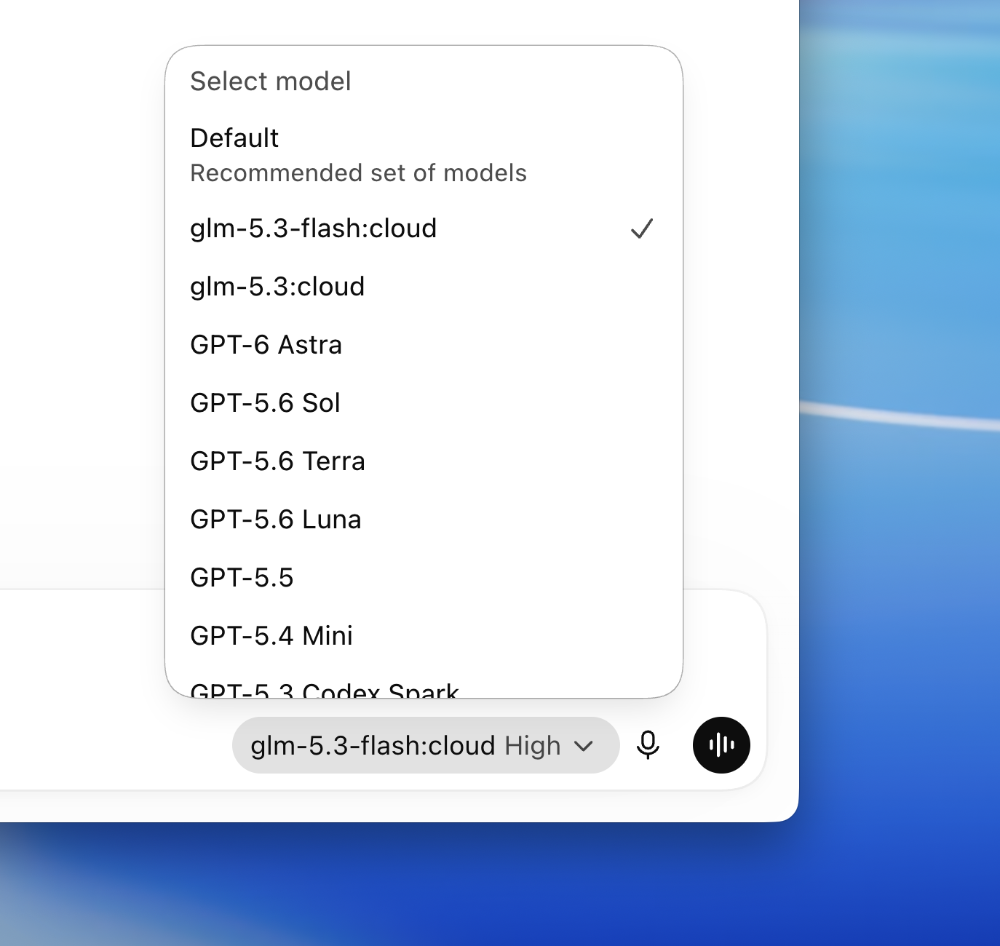

Threads｜AI平凡人創業學院：ChatGPT Desktop 接 Ollama，本機模型保留原本介面

一句話摘要
這則 Threads 的重點不是換一個聊天前端，而是把 ChatGPT Desktop 的模型來源切換成本機 Ollama：使用者可以保留熟悉的 ChatGPT 介面，同時讓開放模型在自己的電腦上執行，降低敏感資料直接送往雲端的需求。
來源脈絡
- 分享連結：https://www.threads.com/share/_n2Up-a-g/
- Threads canonical：https://www.threads.com/@aistart_up/post/DdNXyvWE8C0
- 作者：AI平凡人創業學院（@aistart_up）
- Threads 頁面顯示為一串貼文，約於 2026-09-13 擷取。
- 官方交叉來源：Ollama v0.34.0 GitHub Release，發布時間為 2026-09-05 UTC。
貼文重點
主文先提出一個使用情境：不想把公司文件、客戶資料丟上雲端的人，可以考慮讓 ChatGPT Desktop 接 Ollama，模型直接在自己的電腦裡跑。
貼文列出的簡化流程：
- 下載或更新 Ollama 至 0.34 版。
- 開啟 Ollama app，在其中啟用 ChatGPT。
- 回到 ChatGPT 設定，在模型選單挑選要使用的本機或雲端模型。
作者後續補充：設定入口目前只開放 macOS，Windows 與 Linux 暫時無法走相同路徑；本機跑模型很吃記憶體，普通規格電腦不宜直接挑大型模型。貼文也轉述，外掛、網頁搜尋、電腦操作等功能「不用另外設定即可使用」；這一點屬於社群貼文的實測／轉述，不能視為所有版本、所有模型都已獲官方保證。
官方驗證
Ollama v0.34.0 官方 Release Notes 明確寫出：Ollama models can now be used directly in ChatGPT Desktop，設定可從 Ollama 的 macOS app 進行。官方同一版本也提到 Apple Silicon 的 structured output 效能改善，以及 OpenAI-compatible client tool search 和 response compaction 支援。
目前可確認的範圍：
- Ollama 0.34.0 確實新增 ChatGPT Desktop 使用 Ollama 模型的官方支援說明。
- 官方 Release Notes 指向 macOS app 的設定流程。
- 這不等於所有 ChatGPT Desktop 功能都能由每一個本機模型完整支援。
- ChatGPT 介面「看起來不變」與模型實際能力、上下文長度、工具呼叫能力是不同層次的事。
實作理解：三層不要混在一起
### 1. 介面層
ChatGPT Desktop 負責對話介面、模型選擇和使用者操作體驗。維持原本介面，能降低學習成本，但不代表所有後端功能完全等價。
### 2. 模型執行層
Ollama 負責在本機載入與執行模型。實際速度、記憶體需求、上下文容量與輸出品質，取決於模型大小、量化方式、Apple Silicon／GPU／RAM，以及 Ollama 當前版本。
### 3. 工具與資料邊界
網頁搜尋、外掛、電腦操作或其他工具可能涉及額外的權限、網路連線與資料外傳。即使模型在本機，工具執行結果仍可能離開本機；導入前必須逐項確認。
導入檢核表
- [ ] 確認使用 macOS，且 ChatGPT Desktop、Ollama 都更新到支援的版本。
- [ ] 先從小型模型開始，觀察 RAM、GPU／統一記憶體、溫度與回應速度。
- [ ] 用不含個資、金鑰、公司機密的測試文件驗證資料流向。
- [ ] 分別測試純聊天、長文件、結構化輸出與工具呼叫，不要只測一個問答。
- [ ] 檢查模型授權、商業使用限制與下載來源。
- [ ] 若啟用網頁搜尋、外掛或電腦操作，逐項檢視權限和可能的資料外傳。
- [ ] 不要因為介面仍像 ChatGPT，就假設本機模型具備雲端模型的相同推理能力。
- [ ] 為正式工作保留雲端模型 fallback，並設定敏感資料不可外傳的規則。
對 AI 學習雷達的價值
這則分享補上「熟悉的雲端 AI 介面 × 本地模型執行」的混合工作流。它適合拿來教學或實驗：先讓使用者理解本地推理的隱私、硬體和成本取捨，再比較同一個任務在本機與雲端模型的品質、速度和工具支援差異。
最精準的定位不是「ChatGPT 變免費」或「所有功能都離線」，而是：Ollama 提供一個本機模型後端，ChatGPT Desktop 提供熟悉的操作入口；兩者之間的可用功能與資料邊界，仍受版本、平台、模型和工具設定影響。
原始連結
- Threads 分享：https://www.threads.com/share/_n2Up-a-g/
- Threads canonical：https://www.threads.com/@aistart_up/post/DdNXyvWE8C0
- Ollama v0.34.0 Release：https://github.com/ollama/ollama/releases/tag/v0.34.0
- Ollama macOS 下載：https://ollama.com/download/mac
- Ollama 新版 app 介紹：https://ollama.com/blog/new-app